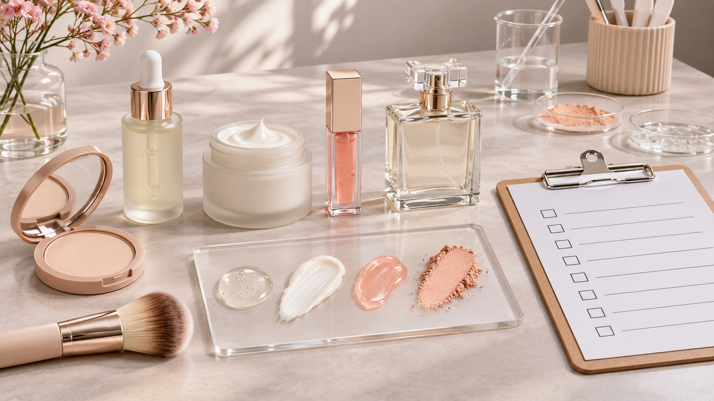
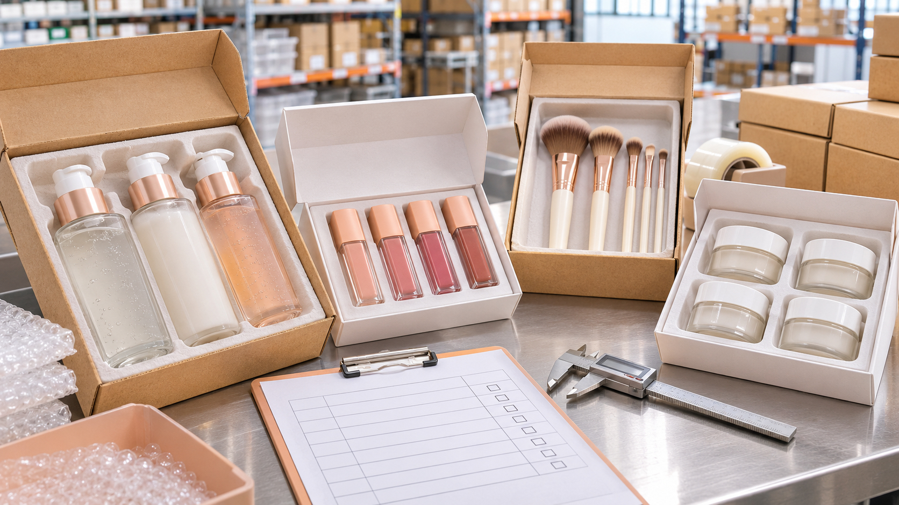

Direct answer: Current beauty opportunity is strongest where a clear consumer routine meets credible execution: skin-focused colour, performance-led but gentle care, body and fragrance routines, and convenient value formats. Use these as test hypotheses, not unsupported claims. Before you place a China beauty order, lock the target market, formula and ingredient information, intended claims, sample, pack components, batch record and inspection criteria.

1. Turn a current beauty signal into a controlled test
2026 beauty market reporting points to skin-first and ingredient-led routines, treatment-minded body care, fragrance layering, value-conscious formats and renewed colour cosmetics. A buyer should not translate that into a broad “trending beauty” order. Instead, choose one customer problem and one retail promise: for example a simple lip-care format, a skin-focused base product, a body-care extension or a scent-led routine.
Keep the test assortment tight. Define the customer, channel, retail price, target market and replenishment decision before asking for quotes. This makes it possible to compare suppliers on the same version of the product instead of comparing attractive but different samples.
2. Separate product facts from marketing claims
Beauty claims must be supportable in the market where the product will be sold. “Clean”, “dermatologist tested”, “hypoallergenic”, “anti-ageing”, “SPF” and medical-style promises should never be copied from a supplier listing without reviewing what evidence and rules apply. Request the exact wording intended for the label and product page, and keep it separate from unverified supplier descriptions.
Write the brief around verifiable details: product type, intended use, full ingredient or formula information where relevant, fill volume, fragrance status, shade or variant, compatibility of formula and primary pack, shelf life or period-after-opening information, batch format and target market. Do not change formula, fragrance, fill level or critical packaging after sample approval without a written change record.
| Control point | Why it matters | Buyer action |
|---|---|---|
| Formula and ingredient information | Supports a consistent sample, safety review and market documentation path. | Record the version approved; flag any substitution. |
| Claim and label copy | Claims can trigger different market obligations and consumer expectations. | Approve final artwork for the target market, not a generic listing image. |
| Primary packaging | Compatibility, leakage and dispensing affect the usable product. | Test the formula in the final bottle, jar, pump or applicator. |
| Batch identification | Links finished goods to production and quality records. | Confirm location, format and legibility before mass production. |
| Master carton | Protects retail packs and controls freight volume. | Approve inner-pack count, carton dimensions and drop protection. |
3. Make regulatory records a gate, not an afterthought
Cosmetic rules depend on the destination and the product’s intended presentation. In the United States, FDA guidance explains the facility registration and cosmetic product listing framework introduced by MoCRA. In the EU, the responsible person must ensure a cosmetic safety assessment and cosmetic product safety report before placing a product on the market; product information is notified through the CPNP where applicable.
This article is a procurement guide, not legal advice. A sourcing agent can help request supplier documents, match samples to records and inspect labels, but the responsible person, importer and brand owner must confirm the rules for the actual target market, product and claims.

4. Approve the final sample, not only the formula
A beauty sample should represent the sold product: formula, fragrance, shade, applicator, pump or cap, fill level, label, outer carton and insert. Test the practical experience too: pump strokes, leakage, closure torque, brush shedding, compact hinge, applicator fit and visible defects. For shade-led products, agree an approved reference under a defined light condition and retain photos with the sample record.
For a first production run, document what is allowed to vary and what requires written sign-off. A small change to a pump, label adhesive, bottle colour or fragrance can alter the product, its presentation and the documentation that supports it.
5. Inspect batch, label and carton together
Pre-shipment checks should match the approved brief. Record product quantity, batch code, label version, retail-pack condition, fill or weight checks where appropriate, colour or shade mix, pump/cap function, leakage evidence, insert presence, carton count and carton marks. Sample different cartons rather than inspecting only display-ready pieces.
For mixed orders, keep each supplier receipt traceable before consolidation. The pre-shipment quality-inspection checklist explains a practical inspection workflow, while the carton marks and packing-list guide helps preserve carton-level records through export handoff.
6. Build a reusable beauty sourcing file
Save the approved product brief, supplier quotation, sample photos, formula or ingredient records where relevant, label artwork, test or compliance documents, batch format, QC report, packing list and shipping decision in one file per SKU. This reduces rework when a product is reordered, a retailer asks a question or a formula/pack change is proposed.
YiwuBridge can help compare supplier options, coordinate sample and packaging checks, document receiving and consolidate cartons. Send product references, market, target claims, quantity, packaging needs and timing through the RFQ form for an initial sourcing review.
Frequently asked questions
Which beauty categories are practical to test in a first import order?
Choose a narrow assortment with an identifiable buyer, target market and documentation path. Skin-focused colour products, simple body-care formats, fragrance-adjacent products and accessories can be evaluated with a controlled sample and packaging brief, but product obligations vary by market.
What should a beauty procurement brief include?
Include the finished product reference, INCI or formula information where relevant, intended claims, target market, pack components, fill volume, batch and shelf-life requirements, required documents, quantity, label artwork, carton needs and delivery date.
Can a sourcing agent approve cosmetic compliance?
No. An agent can collect documents, coordinate samples and inspect finished packaging, but the responsible person, importer and brand owner must confirm the rules for the target market and ensure that product safety, notification, labelling and claims obligations are met.
Build a controlled beauty product brief
Send product references, target market, intended claims, quantity, packaging needs and timing. YiwuBridge can help compare suppliers and organise the next sample, QC and consolidation steps.